Rapport, paramètres et limites · Prototype — B par défaut · Comparateur temps réel A/B — outils QA
Rendu Unity WebGL réel. Géométrie, caméra, état initial à quatre joueurs et exposition identiques dans les comparatifs. Aucun visuel généré. Le cockpit et les couleurs fonctionnelles sont conservés.
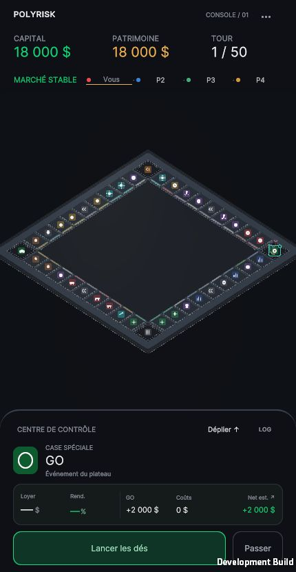
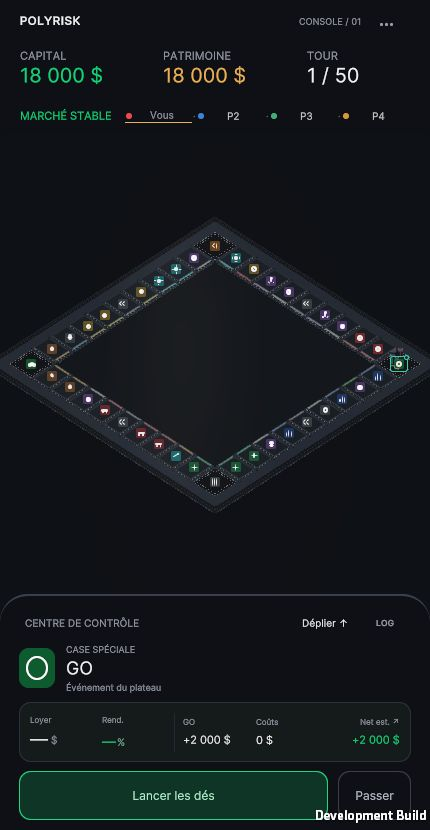
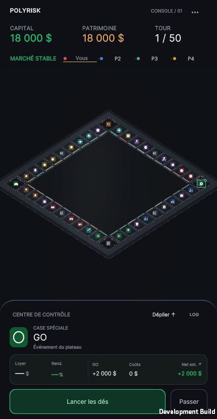
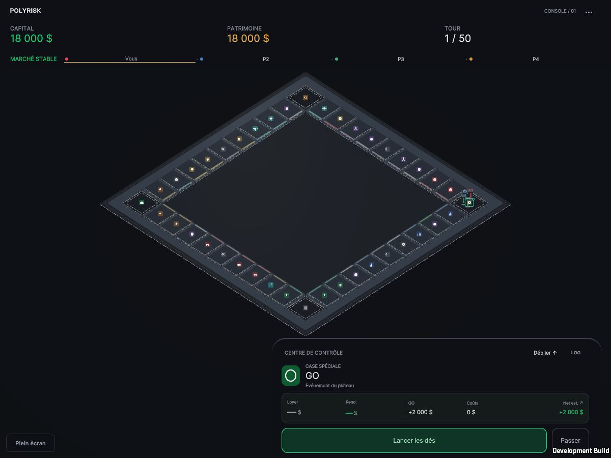
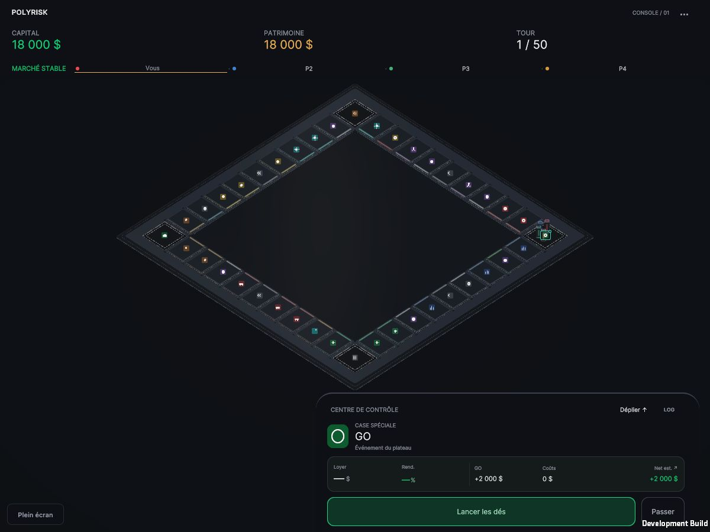
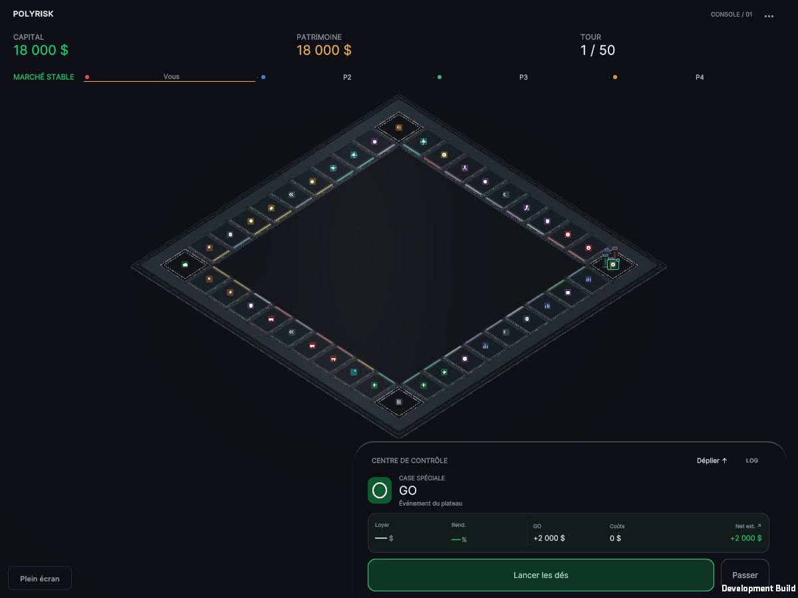
Le banc emploie le prefab et PawnMovement réels sur des parcours déterministes sans actions économiques. Ses premières poses rapides vérifient les 40 positions ; elles ne représentent pas un déplacement normal. Le clip « Partie réelle » utilise les dés et le moteur de la partie.
Partie réelle : dés vers ~6 s, contacts ~8 s, lock ~8,9 s. Son discret du jeu ; aucune prise microphone. La capture vidéo tourne autour de 14 images distinctes/s sur ce poste. Dés · Arrivée en plein cadre · Sélection et inspecteur mobile.
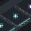
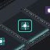
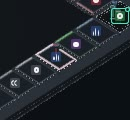
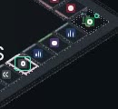
Les détails de cases sont des recadrages de captures natives. Le monolithe ci-dessous est un spécimen QA ×5 déclaré, avec la caméra de jeu inchangée ; il ne remplace pas la preuve de lisibilité en 430 × 830.
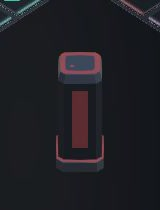
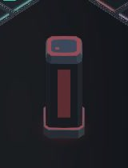
Arrêt après PASS 2F. Recommandation B, sous réserve de validation artistique. Aucun test sur téléphone physique ni mesure GPU. La différence A/B est subtile en vue mobile ; les petits contours gardent les limites d’échantillonnage du cadrage existant.